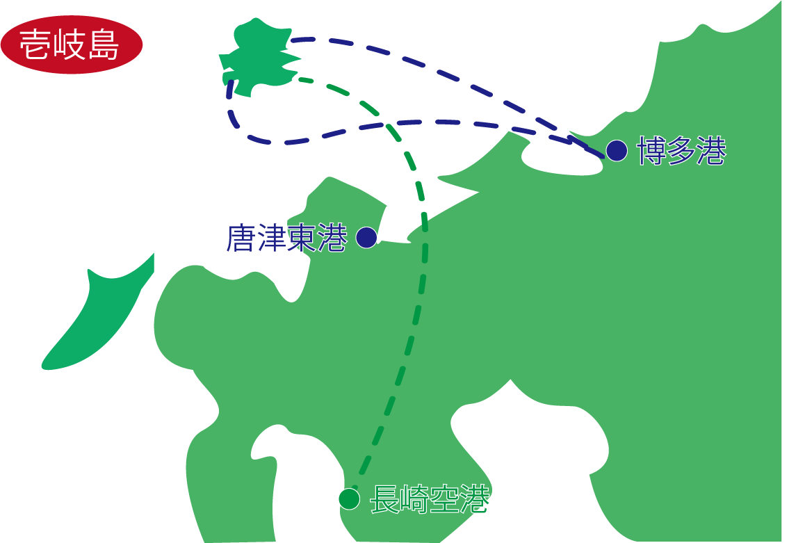

アクセス

| 長崎空港～壱岐空港 | 所要時間： 約30分 |
|---|---|
| 博多港～芦辺港（ジェットフォイル） | 所要時間： 約1時間5分 |
| 厳原港～芦辺港（ジェットフォイル） | 所要時間： 約1時間5分 |
| 博多港～郷ノ浦港（ジェットフォイル） | 所要時間： 約1時間10分 |
| 唐津東港～印通寺港（カーフェリー） | 所要時間： 約1時間45分 |
| 博多港～芦辺港（カーフェリー） | 所要時間： 約2時間10分 |
| 厳原港～郷ノ浦港（カーフェリー） | 所要時間： 約2時間10分 |
| 厳原港～芦辺港（カーフェリー） | 所要時間： 約2時間15分 |
| 博多港～郷ノ浦港（カーフェリー） | 所要時間： 約2時間20分 |